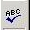
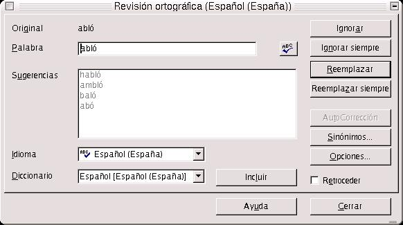
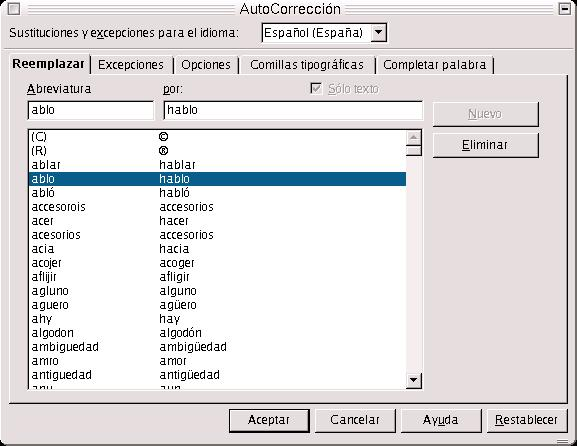
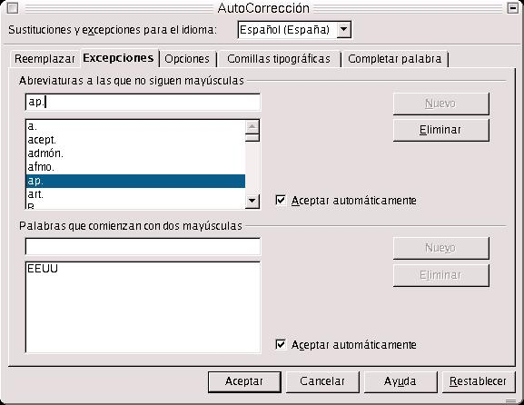
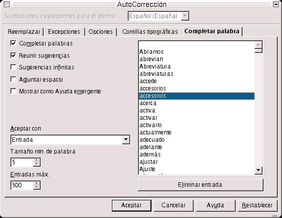
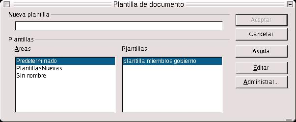
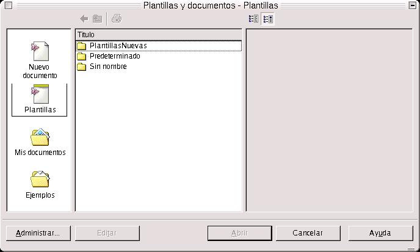

| Herramientas en GNU/LINUX para estudiantes universitarios: La suitte ofimática OpenOffice.org 1.0.1 | ||
|---|---|---|
| Anterior | Capítulo 2. OpenOffice.org 1.0.1 WRITER | Siguiente |
En un mismo texto, cuando nosotros escribimos, podemos cometer una serie de faltas de ortografía que deben de ser corregidas, cara a que el texto quede lo más perfecto posible. OpenOffice nos brinda esta posibilidad, y mucho más. A la vez, puedo hacer que haga una revisión automática a medida que voy introduciendo el texto.
En la revisión automática, una vez que se termina de introducir una palabra, el Writer la analiza sintáctica y ortográficamente. Si la palabra está incorrectamente escrita o no la reconoce, la señalará con una línea roja de forma ondulada.
Para que el corrector nos corrija las palabras sin ningún tipo de error, es necesario indicar, la primera vez que se use, las propiedades de lingüística, o lo que es lo mismo, las opciones para la revisión ortográfica, y tener instalado el archivo que contenga la gramática del idioma del corrector.
Para empezar con la revisión ortográfica de cualquier texto, podemos ir a Herramientas-->Ortografía-->Revisar. O también podemos ir a la barra de herramientas y pulsar directamente sobre el botón Revisión Ortográfica, situado en la barra de herramientas.

Mientras hace la revisión, si encuentra cualquier palabra que desconozca o esté incorrectamente escrita, o no cuaje en el contexto en que está escrita la frase, mostrará un cuadro de diálogo en el cual se nos presentarán distintas opciones para corregir dicha palabra.

Podemos reemplazar la palabra por cualquiera de las que se nos ofrezcan en el cuadro de diálogo, por la que creamos más correcta. Podemos, a su vez, incluir la palabra dentro del diccionario de Español del OpenOffice.org, haciendo clic en el botón incluir. Con esto contribuiremos a incrementar el número de palabras del diccionario y a enriquecerlo.
También podemos decirle que lo ignore todo. Si pulsamos en ignorar, sigue adelante buscando palabras. Pero no nos la guarda en el diccionario. Con lo que, la próxima vez que aparezca no la reconocerá y lo entenderá como error ortográfico.
Ejercicio:
Abrir el documento Hiperenlace1.sxw, y añadir las siguientes líneas:
El que epera un manana meyor, se perde lo qe el hoy tiene de bueno. La berdadera felizidad es la armonia de todas las cosas que deteminan nuesta vida cotidiana.
Aplicar el corrector ortográfico. Si la palabra está correctamente escrita, entonces hay que incluirla en el diccionario. Si no lo está, y nos ofrece otras posibilidades, entonces reemplazamos la palabra por la que esté correctamente escrita, dentro del contexto.
También puede auto corregir una palabra mal escrita. Es decir, que de forma automática sustituye dicha palabra por otra que entienda como más correcta, sin pasar por el corrector.
Un ejemplo es el siguiente:
abló-->la sustituye por habló
accesorois-->la sustituye por accesorios
¿Cómo hacer que esto funcione?. Nos vamos a Herramientas-->autocorrección. En la ficha Reemplazar, situamos el cursor en el campo Abreviatura. Escribimos mal la palabra, después nos vamos al campo Por, escribimos la correcta, y pulsamos en Nuevo.

Lo que hace es añadir las dos combinaciones de caracteres, y cada vez que escribamos en el texto la palabra mal escrita, la sustituye por la correcta
Ejemplo y ejercicio:
Ir a autocorrección, y añadir una palabra mal escrita en el campo Abreviatura, poner la correcta en Por, y cada vez que escribamos en el texto dicha palabra mal escrita, la sustituye por la correcta
A su vez puedo indicar una serie de excepciones a la norma general del lenguaje, que nos dice que después de un punto, sea seguido o aparte, el primer carácter de la siguiente frase ha de introducirse en mayúsculas. Pero, como he dicho, puedo establecer unas excepciones, sobre todo cuando se trata de abreviar palabras:
D.,att.,Dña.,Mr.,Mss., etc..
Le puedo indicar al OpenOffice, que después de introducir dichas abreviaturas, el siguiente carácter no ha de ser mayúscula. Las excepciones se marcan en Herramientas-->Autocorrección-->Excepciones

Un error ortográfico que suele cometerse frecuentemente es la introducción de dos caracteres iniciales en mayúscula o caracteres en minúscula al comienzo de una palabra o frase. Esto, naturalmente, lo corrige el Writer de forma automática. Si los hemos introducido correctamente, debemos añadirlos en la ficha Excepciones-->Palabras que comienzan con dos mayúsculas. Es decir, hay que indicarle al Writer que ciertas palabras o abreviaturas comienzan siempre por minúscula o que comienzan con dos letras mayúsculas.
En la ficha Completar Palabra, tenemos una serie de opciones y un listado de plabras que pueden completarse cuando se empiezan a escribir. Si nos damos cuenta, cuando estamos escribiendo una palabra, el Writer la puede autocompletar. Para ello, simplemente escribimos las dos otres primeras letras de la palabra y pulsamos return: Ejemplo: probar con la palabra Escriba, Español, Configuración, etc.. Writer nos da la posibilidad de completar una palabra sin tener que escribirla entera. Esto se activa en Herramientas --> Autocorrección --> Completar Palabra, en la casilla de verificación Completar Palabras. La palabra a autocompletar ha de estar incluída dentro de la lista de palabras que aparece en la ficha.

Ejemplo:
Con el documento Hiperenlace1.sxw abierto, nos vamos a Autocorrección-->Reemplazar, y añadimos una serie de palabras en Reemplazar, como se expuso antes.
Ir a Autocorrección, y añadir nuevas abreviaturas, como att., org., lted., S.A., S.R.L., S.L., etc.. Probar lo que ocurre cuando las escribimos en texto.
Probar también con la serie de palabras introducidas. Probar que hace la autocorrección.
Una plantilla se puede definir como un documento maestro en el cual se van a integrar otros documentos. Se usan normalmente cuando muchos documentos tienen partes en común, por ejemplo en cartas dirigidas a ciertas personalidades, faxes.. etc. Son documentos que tienen partes comunes a todos, y sin embargo vamos a tener que realizarlos muchas veces en una oficina. Se pueden emitir varios faxes al día, escribir varias cartas... etc.. La función principal es que se eelaboren dichos documentos con un criterio único para todos.
¿Cómo crear una plantilla?
Simplemente, haciendo el documento maestro, y guardándolo después como plantilla de documento en el cuadro de diálogo Guardar Como. En una plantilla se suelen insertar encabezados, pies de página, marcos y el texto de encabezamiento de la carta. También podemos guardarlo de la siguiente forma, que es quizás la más eficiente y sencilla:
Nos vamos a Archivo-->Plantilla-->Guardar. Nos aparece el siguiente cuadro de diálogo Guardar Plantilla:

Selecciono el área en el que deseo que se guarde y le indico el nombre de la plantilla.
Una vez que se ha creado se puede usar ya como plantilla de documento. Para escribir un nuevo documento basado en un maestro, simplemente tenemos que ir a Archivo-->Nuevo-->Plantilla de documento. EN este momento es cuando aparece un cuadro de diálogo, llamado Plantillas y Documentos, en el cual selecciono la plantilla con la que deseo trabajar, que estará dentro del área en la cual la he guardado.

Una vez que se ha abierto, es cuando puedo trabajar con ella, añadiendo texto, eliminándolo, según la necesidad que tenga.
Como ejemplos se exponen las siguientes plantillas, que se muestran a continuación. Son dos plantillas que tienen como característica común, que contienen un encabezado y un pie de página, además de un marco de texto en la zona izquierda. Además en la parte izquierda de cada encabezado se ha insertado el escudo de la Universidad. En la plantilla de fax, se ha insertado además una tabla, que contiene las celdas para rellenar los datos de cabecera del fax.